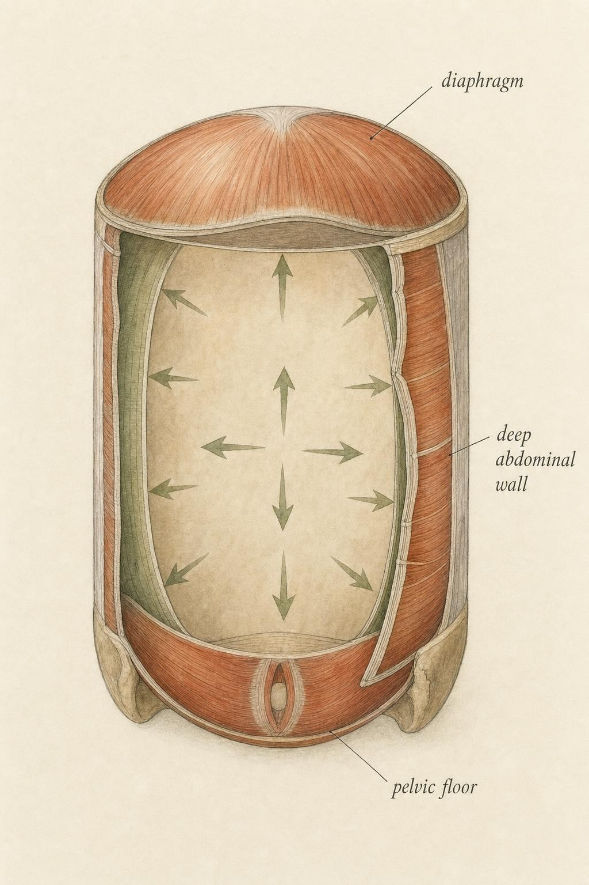
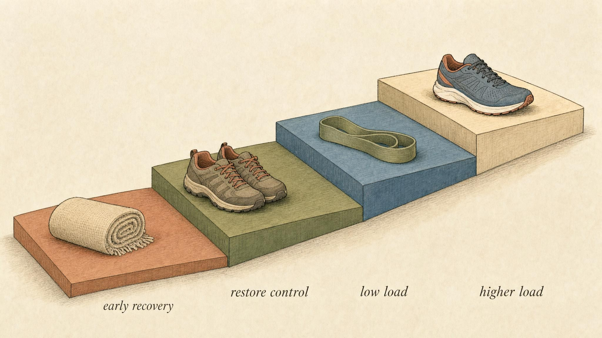

Rebuilding and Individualizing
The postpartum rebuild, and the final turn from the average to the actual person.
A body that has carried and delivered a pregnancy is not a body that broke and needs fixing. It is a body that did something extraordinary and is now remodeling the tissues it borrowed to do it. That distinction matters for everything that follows in this final chapter, because the language we use shapes the expectations we hold, and the single most common error in the postpartum conversation is treating recovery as a switch that flips back on at some fixed date rather than a staged biological process that unfolds over months.
This chapter closes the course with two movements. First, a respectful overview of what happens to the abdominal wall and pelvic floor after birth, offered so that you can recognize the terrain, not so that you can prescribe a path across it. Second, the turn the whole course has been building toward: from the population average to the individual person, who may well be you.
Set the boundary first, then walk the terrain
Let us be exact about what this chapter is and is not, because the honest posture here is the whole lesson. Postpartum care sits squarely inside the clinical boundary. Nothing below is a rehabilitation plan, an exercise protocol, or a timeline you should apply to any real person, including yourself. It is an overview for informed understanding. The appropriate stance is to recognize what is happening in the tissues, to appreciate why patience is not optional, and to know when professional guidance is warranted.
This is not caution for its own sake. The evidence base itself refuses to support a universal protocol. A recent scoping review of twenty-eight studies on rehabilitation for diastasis recti abdominis, the separation of the two halves of the outermost abdominal muscle, found promising results across several approaches but concluded there is no consensus on the most effective program design, with substantial variability in diagnostic criteria, severity, and time since birth across the literature (Mamas et al., 2024). When the research cannot name a single best path, no chapter honestly can either.
So we will do the thing the evidence does support: describe the system, grade the confidence, and mark the edges of your role.
The abdominal wall as a pressure canister
Refresh the anatomy briefly, because the rebuild only makes sense once the working system is clear. Picture the trunk as a soft cylinder, a pressure-managing canister. The diaphragm forms the top. The deep abdominal wall, chiefly the transversus abdominis wrapping around the sides and front, forms the walls. The pelvic floor, a hammock of muscle slung across the base of the pelvis, forms the bottom. When you lift, cough, laugh, or brace, these three structures coordinate to raise and distribute intra-abdominal pressure, the internal pressure that stiffens the trunk and protects the spine.
Coordination is the operative word. Intra-abdominal bracing is not one muscle firing hard. It is a canister managing pressure evenly, top and bottom and walls moving together so that force is shared rather than dumped onto the weakest surface. This is why the parts cannot be understood in isolation, and why an injury to one wall changes the behavior of the whole.

The trunk as a coordinated pressure canister: lid, walls, and floor working together." data-image-idx="0" style="display:block;max-width:100%;max-height:75vh;height:auto;width:auto;margin:0 auto;cursor:pointer;">What pregnancy and birth ask of the wall
Across pregnancy, the growing uterus stretches and thins the midline connective tissue, the linea alba, that joins the two halves of the rectus abdominis down the front of the abdomen. Some degree of separation is nearly universal in late pregnancy. It is an adaptation, not a pathology. The clinical question is what happens afterward: how far the gap narrows, how well the connective tissue regains tension, and how well the deep wall relearns to generate and share pressure.
Prevalence estimates for persistent diastasis recti after birth range widely, from roughly thirty to sixty-eight percent, depending on how and when it is measured (multiple authors, 2024). That range is itself a teaching point. The condition is common, its measurement is inconsistent, and its profile is shaped by multiple interacting individual characteristics. In that same two-year cohort, advanced maternal age, higher parity, higher pre-pregnancy body mass index, and cesarean delivery all emerged as significant risk factors, which tells you immediately that no two rebuilds start from the same place.
Diastasis recti is a system problem, not a local one
The temptation is to treat diastasis recti as a cosmetic concern about a visible gap or a bulge. The evidence points somewhere more important. A cross-sectional study directly linking separation severity to pelvic floor muscle activity, measured by electromyography, which records the electrical signals of muscle contraction, found that greater separation was associated with altered pelvic floor signals and altered anatomical structures (Fu et al., 2025). In other words, when the front wall of the canister loses tension, the floor of the canister changes how it works. The authors concluded that strategies should be tailored to severity and to individual factors such as delivery mode and parity, a conclusion you will hear echoed at every turn in this literature.
A second cross-sectional study using ultrasound imaging alongside pelvic floor electromyography reinforced the same point, reporting measurable differences in both the width of the muscle separation and the size of the levator ani muscle hiatus, the opening in the pelvic floor, between women with diastasis and controls (multiple authors, 2024). The message across these studies is consistent: the abdominal wall and the pelvic floor recover as a linked system, not as independent parts. This is exactly why the first widget below lets you watch pressure behave differently when one wall of the canister is compromised.
Pelvic floor recovery: the real clinical burden
The pelvic floor deserves its own attention, because the numbers here are not small and the tissue is often quietly dysfunctional after birth. A large meta-analysis pooling thirteen studies and more than 1.5 million participants reported postpartum prevalence of urinary incontinence at 27.9 percent, pelvic organ prolapse at 14.2 percent, and anal incontinence at 0.4 percent (Barca et al., 2021). Vaginal delivery carried significantly higher odds of all three compared with cesarean delivery, yet the same analysis was careful to note that cesarean delivery does not provide complete protection. Pregnancy itself, not only the mode of birth, loads the floor.
A clinical commentary presenting a phased rehabilitation timeline underscored that pelvic floor muscles are typically dysfunctional postpartum with respect to strength, motor control, and endurance, and observed that referral to physical therapy in the prenatal and postnatal period is still not standard of care despite clear benefit (Selman et al., 2022). Read that twice. The tissue commonly needs support, effective support exists, and most people are never routinely offered it. That gap is precisely where your literacy matters. You are not the person who provides the assessment. You may well be the person who recognizes that one is warranted and says so.
Why the return to load is staged, and why it is mindful
Now to the part that most tempts overreach: getting back to training. The honest state of the evidence is that recommendations vary enormously, from full rest to blanket exercise clearance at six weeks, which reveals the gap between evidence and practice rather than a settled answer (Selman et al., 2022). A fixed calendar date is a poor tool for a biological process that remodels at an individual pace.
The most widely adopted guidance for higher-impact return comes from a set of postnatal running guidelines that reframed the question from "how many weeks" to "is the system ready." Those guidelines established that high-impact exercise carries roughly a 4.59-fold increased risk of pelvic floor dysfunction compared with low-impact exercise in postnatal women, recommended against running before twelve weeks postpartum, and advocated individualized pelvic floor physiotherapy assessment for all postnatal women regardless of delivery mode (Goom et al., 2019). Crucially, they tied progression to symptoms and to strength and pelvic floor readiness rather than to a fixed time threshold.
Hold two ideas together. There are sensible floors, such as not running before twelve weeks, and there is no universal ceiling or schedule, because readiness is individual and criteria-based. A staged return means moving from early recovery, to restoring breathing and coordinated bracing, to low-load control, to progressively higher load, advancing only as the tissue demonstrates it can manage each demand without symptoms. On program design specifically, a network meta-analysis of twenty-seven randomized controlled trials covering 1,340 women found that combined exercise approaches generally outperform single-modality programs, with limited benefit from abdominal binders and kinesio taping, while still concluding that high variability in program design limits definitive recommendations (Bigdeli et al., 2025). Exercise is primary; the precise recipe is not settled.

A staged return moves from recovery toward load as readiness is demonstrated, not as a calendar dictates." data-image-idx="1" style="display:block;max-width:100%;max-height:75vh;height:auto;width:auto;margin:0 auto;cursor:pointer;">"Mindful" is not a soft word here. It means attending to the actual signals a body sends during and after activity, rather than pushing through them because a plan said today was the day. Heaviness or pressure in the pelvic floor, leaking, a visible doming or bulging along the midline under load, and pain are not to be worked through. They are information that the current demand exceeds current readiness. The correct response is to reduce load and, where these signs persist, to seek professional evaluation.
From the average to the actual person
Here is the second movement of the chapter, and the honest lesson of the entire course. Every principle we have covered describes an average, and no person is the average. Cycle length, symptom patterns, responses to hormonal contraception, energy needs, bone trajectories across the reproductive years, and recovery timelines after birth all vary, sometimes enormously, between people who look demographically identical.
This is not a hedge. It is a documented feature of human physiology. A comprehensive review of exercise-response variation in Cell Metabolism showed that inter-individual variability is driven by both extrinsic factors, such as timing, dose, sleep, diet, and medications, and intrinsic factors, such as sex, age, hormonal status, ancestry, and genetics. Strikingly, the same review documented that within a single person, one outcome may improve substantially from a given stimulus while another does not change or even worsens (Noone et al., 2024). Population averages, in other words, do not reliably predict what will happen in the individual in front of you.
So what does literacy actually mean? It means holding the general model firmly enough to be useful and lightly enough to be corrected by the person. The model tells you what to look for and what is plausible. The person tells you what is true for them. When those two disagree, the person wins.
The average is a map. The person is the territory. A good map keeps you from getting lost; it does not tell you which stone you are standing on.
A working principle for individualizing
How to individualize without overstepping
Individualizing well is a discipline, not a license. A few frames make it practical. Treat every general claim as a hypothesis about a person, not a verdict. Weight the person's own tracked pattern over the textbook default, because their history is the highest-resolution data you have. Notice when a response departs from what the average predicted, and treat that departure as information rather than as noncompliance. And separate cleanly the things you can support through education from the things that require a clinician, so that individualizing never becomes a back door to diagnosis or prescription.
The clinical boundary, one last time
Throughout this course, one thread has recurred: recognize, and refer. It is worth stating in its final form. There is a category of things you learn to notice, and a category of things you must never diagnose or treat. Literacy lives entirely in the first category.
The clinical boundary is firmest around three areas, and each has appeared in this course for a reason. Contraception is a prescribing decision with individual medical considerations; your role is understanding, never recommending a method or a change to one. Amenorrhea, the absence of menstrual periods, is the recognize-and-refer thread we have carried from the start. When periods are absent or have stopped, particularly alongside high training loads, low energy availability, or restrictive eating, that pattern may signal relative energy deficiency in sport, a state in which the body is not taking in enough energy to support its functions. Notice it. Understand that it may warrant professional evaluation. Do not diagnose it and do not treat it. And postpartum recovery, the whole first half of this chapter, belongs to qualified clinicians for assessment and for any rehabilitation plan.
Notice how much of the evidence in this chapter pointed the same direction. Diastasis strategies should be tailored to severity and individual factors (Fu et al., 2025). Pelvic floor assessment is recommended for all postnatal women regardless of delivery mode (Goom et al., 2019). Referral to physical therapy remains underused despite clear benefit (Selman et al., 2022). The research does not merely permit referral. It practically insists on it.
Grading the evidence honestly
A closing word on confidence, because a literate reader deserves the truth about the ground under their feet. A great deal of cycle-based training and nutrition advice rests on weak or contradictory data. Where this chapter drew on stronger evidence, such as the meta-analytic prevalence of postpartum pelvic floor dysfunction (Barca et al., 2021), it said so. Where the evidence is genuinely unsettled, such as the best design for a diastasis rehabilitation program, it said that too, repeatedly, because the reviews themselves refuse to name a single answer (Mamas et al., 2024; Bigdeli et al., 2025). Confident-sounding protocols in this space often outrun their data. Part of your fluency is the ability to tell the difference.
This is the humility the course opened with, returning at the end. This material distills research. A distillation is useful and it is also lossy. Clinical judgment, built over years of seeing individual bodies, and lived female expertise, built over a lifetime inside one, both carry an authority that no distillation can replace. You leave this course fluent in the system, honest about the evidence, and clear about the edge of your role. That combination, and not any protocol, is what competence looks like here.
Key Takeaways
- The abdominal wall, diaphragm, and pelvic floor work as one pressure canister; when the front wall loses tension after birth, pressure sharing and pelvic floor behavior change with it.
- Some abdominal separation is nearly universal in late pregnancy; persistent diastasis recti is common, variably measured, and shaped by individual factors such as age, parity, body mass index, and delivery mode.
- Postpartum pelvic floor dysfunction carries a genuine clinical burden, and effective assessment exists but is routinely underoffered, which is exactly where recognition and referral matter.
- A staged, mindful return means progressing by demonstrated readiness and symptom signals, not by a fixed calendar; sensible floors exist, but no universal schedule does.
- Every principle in this course is an average, and no person is the average; individualizing means holding the general model lightly enough to be corrected by the person.
- The clinical boundary is firmest around contraception, amenorrhea and relative energy deficiency in sport, and postpartum recovery: recognize and refer, never diagnose or treat.
This is where the course ends and your practice begins. You now hold a working model of female physiology across the reproductive years, a clear sense of where the evidence is strong and where it is thin, and a firm map of the line between education and care. Carry all three lightly and use them in service of the actual person in front of you, who is never the average, and who may be yourself.
References
Barca, J. A., Bravo, C., Pintado-Recarte, M. P., Asúnsolo, Á., Cueto-Hernández, I., Ruiz-Labarta, J., Buján, J., Álvarez-Mon, M., Ortega, M. A., & De León-Luis, J. A. (2021). Pelvic floor morbidity following vaginal delivery versus cesarean delivery: Systematic review and meta-analysis. Journal of Clinical Medicine, 10(8), 1652. https://doi.org/10.3390/jcm10081652
Bigdeli, N., et al. (2025). An evidence-based comparison of rehabilitation strategies for diastasis recti abdominis in postpartum women: A systematic review and network meta-analysis. Scientific Reports, 15. https://doi.org/10.1038/s41598-025-22574-2
Fu, F., Zhang, S., Zhang, H., Xuan, Z., Zhang, N., & Xie, Z. (2025). Effects of postpartum diastasis recti abdominis on multisite pelvic floor electromyography and anatomical structure: A cross-sectional study. PMC. https://pmc.ncbi.nlm.nih.gov/articles/PMC12212815/
Goom, T., Donnelly, G., & Brockwell, E. (2019). Returning to running postnatal: Guidelines for medical, health and fitness professionals managing this population. https://absolute.physio/wp-content/uploads/2019/09/returning-to-running-postnatal-guidelines.pdf
Mamas, T., Manolas, A., Koulouras, A., et al. (2024). Diastasis recti abdominis rehabilitation in the postpartum period: A scoping review of current clinical practice. PMC. https://www.ncbi.nlm.nih.gov/pmc/articles/PMC11023973/
Multiple authors. (2024). Ultrasonographic evaluation of diastasis recti abdominis and its association with pelvic floor dysfunction in postpartum women: A cross-sectional study of a two-year retrospective cohort. PMC. https://www.ncbi.nlm.nih.gov/pmc/articles/PMC11655187/
Noone, J., et al. (2024). Understanding the variation in exercise responses to guide personalized physical activity prescriptions. Cell Metabolism, 36(4). https://doi.org/10.1016/j.cmet.2023.12.025
Selman, R., Early, K., Battles, B., Seidenburg, M., Wendel, E., & Westerlund, S. (2022). Maximizing recovery in the postpartum period: A timeline for rehabilitation from pregnancy through return to sport. International Journal of Sports Physical Therapy, 17(6). https://doi.org/10.26603/001c.37863